对象和类
- 类声明：以数据成员的方式描述数据部分，以成员函数（称为方法）的方式描述共有接口；放在头文件中
- 类方法定义：描述如何类成员函数。放在源代码中
1 |
|
类对象默认访问控制为私有private。结构体默认为公有public。
定义位于类声明中的函数自动成为内联函数。（set_tot()）
所创建的每个新对象都有自己的存储空间，用于存储其内部变量和 类成员；但同一个类的所有对象共享同一组类方法，即每种方法只有一 个副本。
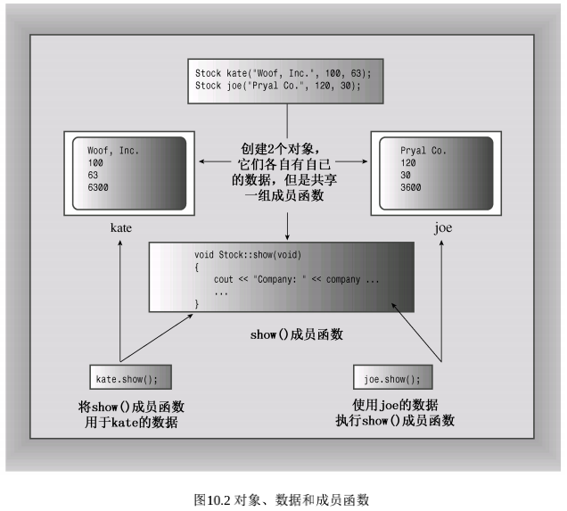
使用类
使用类与使用基本的内置类型（如int和char）尽可能相同。要创建类对象，可以声明类变量，也可以使用 new 为类对象分配存储空间。可以将对象作为函数的参数和返回值，也可以将一个对象赋给另一个。
C++提供了两种使用构造函数来初始化对象的方式。第一种方式是 显式地调用构造函数：
1 | Stock food = Stock("World Cabbage", 250, 1.25); |
另一种方式是隐式地调用构造函数：
1 | Stock garment("Furry Mason", 50, 2.5); |
这种格式更紧凑，它与下面的显式调用等价。
1 | Stock garment = Stock("Furry Mason", 50, 2.5); |
每次创建类对象（包括使用 new 动态分配内存）时，C++都使用类构造函数。
1 | Stock *pstock = new Stock("Electrosgock Games", 18. 19.0); |
这条语句创建一个Stock对象，将其初始化为参数提供的值，并将 该对象的地址赋给pstock指针。
还可以使用列表初始化。
1 | Stock jock{"xxxx"} |
默认构造函数是在未提供显式初始值时，用来创建对象的构造函数。如果没有提供任何构造函数，则C++将自动提供默认构造函数。它是默认构造函 数的隐式版本，不做任何工作。对于Stock类来说，默认构造函数可能 如下：
1 | Stock::Stock() {}; |
提供了构造函数，就没有默认构造函数了。
复制
1 | Stock stock2 = Stock("Boffo Objects", 2, 2.0); |
第一条语句是初始化，它创建有指定值的对象，可能会创建临时对象（也可能不会）；第二条语句是赋值。像这样在赋值语句中使用构造函数总会导致在赋值前创建一个临时对象。
1 | stock2=stock1 |
源对象的每个数据成员的内容复制到目标成员中。
const 成员函数
const 成员函数
请看下面的代码片段：
1 | const Stock land = Stock("KP", 0, 0.0); |
对于当前的C++来说，编译器将拒绝第二行。这是什么原因呢？因为 show() 的代码无法确保调用对象不被修改。
我们以前通过将函数参数声明为 const 引用或指向 const 的指针来解决这种问题。但这里存在语法问题：show() 方法没有任何参数。相反，它所使用的对象是由方法调用隐式地提供。
需要一种新的语法来保证函数不会修改调用对象。C++的解决方法是将 const 关键字放在函数的括号后面。也就是说，show() 声明应像这样：
1 | void show() const; // promise not to change invoking object |
同样，函数定义的开头应像这样：
1 | void stock::show() const { |
以这种方式声明和定义的类函数被称为 const 成员函数，从而确保函数内不会修改调用对象。
对象数组
声明对象数组的方法与 声明标准类型数组相同。
1 | Stock mystuff[4]; |
可以用构造函数来初始化数组元素。在这种情况下，必须为每个元 素调用构造函数：
1 | / create an array of initialized objects |
这里的代码使用标准格式对数组进行初始化：用括号括起的、以逗 号分隔的值列表。其中，每次构造函数调用表示一个值。如果类包含多 个构造函数，则可以对不同的元素使用不同的构造函数。
运算符重载
c++根据操作数的数目和类型决定采用哪种操作。
operator op (argument)
限制：
- 1．重载后的运算符必须至少有一个操作数是用户定义的类型，这将防止用户为标准类型重载运算符；
- 2．使用运算符时不能违反运算符原来的句法规则。例如不要将
-重载为加法运算。同样，不能修改运算符的优先级； - 3．不能创建新运算符。例如，不能定义
operator **()函数来表示求幂； - 4．不能重载下面的运算符：
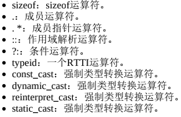
- 5．表11.1中的大多数运算符都可以通过成员或非成员函数进行重 载，但下面的运算符只能通过成员函数进行重载。
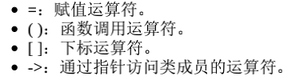
1 | class Stu{ |
友元
- 友元函数；
- 友元类；
- 友元成员函数。
通过让函数成为类的友元，可以赋予该函数与类的成员函数相同的访问权限。
类的友元函数是非成员函数，但访问权限与成员函数相同
需要友元的原因是为了解决这样一个问题：
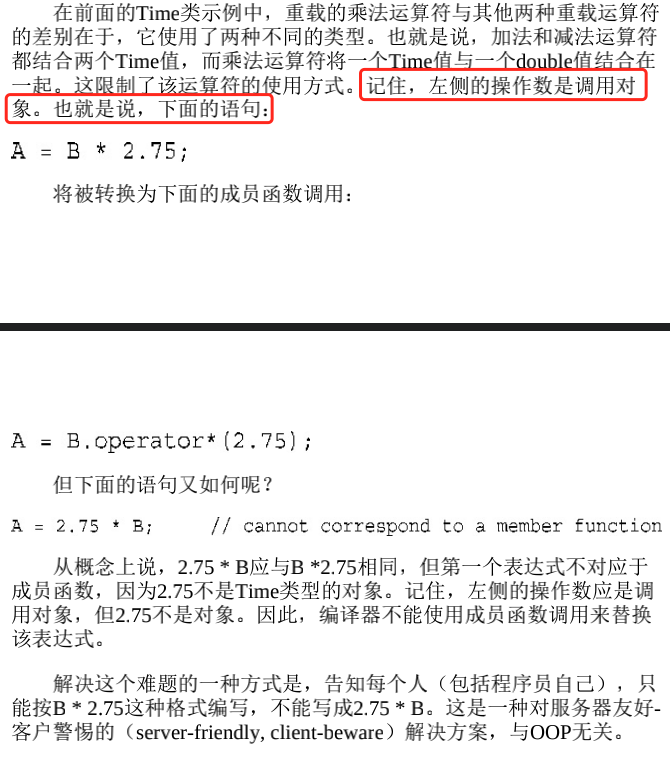
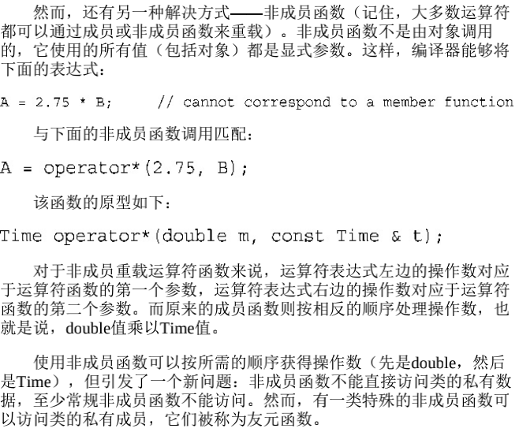
重载<<
使之与cout可以显示对象的内容
1 | ostream & operator << (ostream &os,const c_name & obj){ |
将对象转换成基本类型
1 | operator typename()； |
动态内存分配
static
int StringBad::num_strings = 0; 这条语句将静态成员 num_strings 的值初始化为零。注意：不能在类声明中初始化静态成员变量，这是因为类声明中只描述如何分配内存，但并不分配内存。如果是const整数类型或者枚举类型，可以在类声明中初始化。
首先，不能通过对象调用静态成员函数；实际上，静态成员函数甚 至不能使用this指针。
其次，由于静态成员函数不与特定的对象相关联，因此只能使用静态数据成员。

特殊成员函数
- 默认构造函数；
- 默认析构函数；
- 复制构造函数；
- 赋值运算符；
- 地址运算符。
更准确地说，编译器将生成上述最后三个函数的定义——如果程序 使用对象的方式要求这样做。例如，如果您将一个对象赋给另一个对 象，编译器将提供赋值运算符的定义。
复制构造函数
复制构造函数是构造函数的一种，也称拷贝构造函数，它只有一个参数，参数类型是本类的引用。
复制构造函数用于将一个对象复制到新创建的对象中。也就是说，它用于初始化过程中（包括按值传递参数），而不是常规的赋值过程（那赋值的时候怎么办？赋值靠赋值运算符=）原型是：Class_name(const Class_name &)。它接受一个指向类对象的常量引用作为参数。
1 | class Complex{ |
调用时机
1) 当用一个对象去初始化同类的另一个对象时，会引发复制构造函数被调用。例如，下面的两条语句都会引发复制构造函数的调用，用以初始化 c2。
1 | Complex c2(c1); |
这两条语句是等价的。
注意，第二条语句是初始化语句，不是赋值语句。赋值语句的等号左边是一个早已有定义的变量，赋值语句不会引发复制构造函数的调用。
1 | Complex c1, c2; |
这条语句不会引发复制构造函数的调用，因为 c1 早已生成，已经初始化过了。
2) 如果函数 F 的参数是类 A 的对象（不是引用），那么当 F 被调用时，类 A 的复制构造函数将被调用。换句话说，作为形参的对象，是用复制构造函数初始化的，而且调用复制构造函数时的参数，就是调用函数时所给的实参。
3) 如果函数的返冋值是类 A 的对象，则函数返冋时，类 A 的复制构造函数被调用。换言之，作为函数返回值的对象是用复制构造函数初始化 的，而调用复制构造函数时的实参，就是 return 语句所返回的对象。
每当程序生成了对象副本时，编译器都将使用复制构造函数。何时生成临时对象随编译器而异，但无论是哪种编译器，当按值传递和返回对象时，都将调用复制构造函数。
赋值运算符
。C++允许类对象赋值，这是通过自动为类重载赋值运算符实现的。这种运算符 的原型如下：
1 | Class_name & Class_name::operator=(const Class_name &); |
它接受并返回一个指向类对象的引用。
1 | // assign a String to a String |
调用时机
赋值运算符的功能以及何时使用它
将已有的对象赋给另一个对象时，将使用重载的赋值运算符。初始化对象时，并不一定会使用赋值运算符，而更可能是调用复制构造函数。
1 | StringBad metoo = knot; |
这里，metoo 是一个新创建的对象，被初始化为 knot 的值，因此使用复制构造函数。然而，正如前面指出的，实现时也可能分两步来处理这条语句：使用复制构造函数创建一个临时对象，然后通过赋值将临时 对象的值复制到新对象中。这就是说，初始化总是会调用复制构造函数，而使用 = 运算符时也可能调用赋值运算符。
与复制构造函数相似，赋值运算符的隐式实现也对成员进行逐个复制，静态成员不受影响。
继承
1 | class RetedPlayer: public TableTennisPlayer {} |
使用公有派生，基类的公有成员将成为派生类 的公有成员；基类的私有部分也将成为派生类的一部分，但只能通过基 类的公有和保护方法访问。
构造函数
1 | // RatedPlayer methods |
其中: TableTennisPlayer(fn,ln,ht) 是成员初始化列表。它是可执行的 代码，调用TableTennisPlayer构造函数。
如果省略成员初始化列表，情况将如何呢？首先必须创建基类对象，如果不调用基类构造函数，程序将使用默 认的基类构造函数，因此上述代码与下面等效：
1 | RatedPlayer::RatedPlayer(unsigned int r, const string & fn, |
除非要使用默认构造函数，否则应显式调用正确的基类构造函数。
如果愿意，也可以对派生类成员使用成员初始化列表语法。在这种 情况下，应在列表中使用成员名，而不是类名。所以，第二个构造函数 可以按照下述方式编写：
1 | RatedPlayer::RatedPlayer(unsigned int r, const string & fn, |
有关派生类构造函数的要点如下：
- 首先创建基类对象；
- 派生类构造函数应通过成员初始化列表将基类信息传递给基类构造函数；
- 派生类构造函数应初始化派生类新增的数据成员。
派生类对象过期时，程序将首先调用派生类析构函数，然后再调用基类析构函数。
派生类和基类
第一，派生类对象可以使用基类的方法，条件是方法不是私有的；
第二，基类指针可以在不进行显式类型转换的情况下指向派生类对象（基类指针可以直接指向派生类，神奇）；
第三，基类引用可以在不进行显式类型转换的情况下引用派生类对象（基类引用可以直接应用派生类，神奇）。
不过，基类指针或引用只能用于调用基类方法。
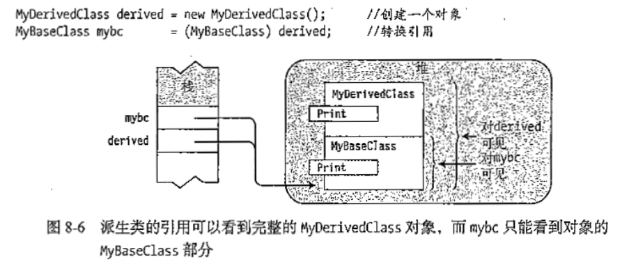
将派生类引用或指针转换为基类引用或指针被称为向上强制转换 （upcasting），这使公有继承不需要进行显式类型转换。该规则是is-a 关系的一部分。
相反的过程——将基类指针或引用转换为派生类指针或引用——称为向下强制转换（downcasting），如果不使用显式类型转换，则向下强制转换是不允许的。原因是is-a关系通常是不可逆的。派生类可以新增 数据成员，因此使用这些数据成员的类成员函数不能应用于基类。
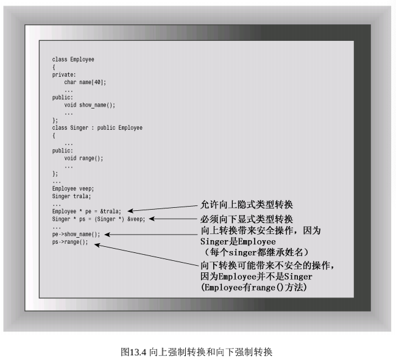
虚函数
如果要在派生类中重新定义基类（重写override）的方法，则将它设置为虚方法。
关键字virtual只用于方法声明中，不用于方法定义中。
基类声明需要一个虚析构函数。如果子类中有属性开到了堆区，那么父类指针释放时无法调用子类的析构代码。
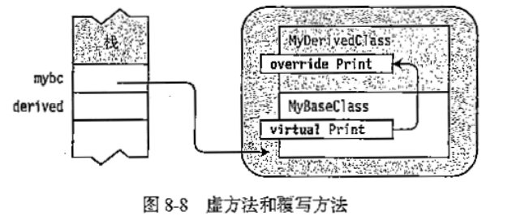
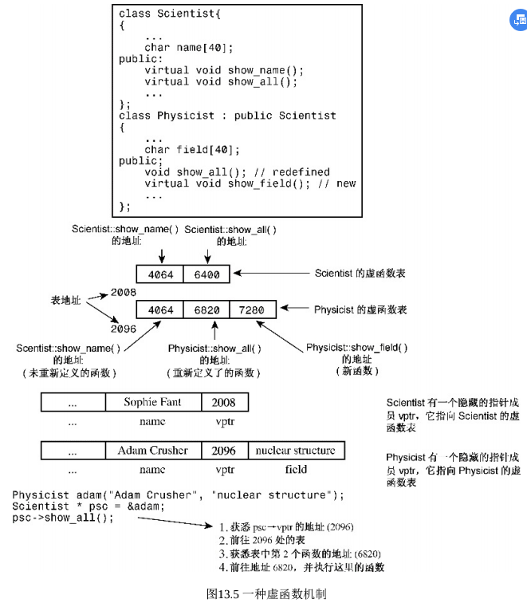
注意事项
- 在基类方法的声明中使用关键字virtual可使该方法在基类以及所有 的派生类（包括从派生类派生出来的类）中是虚的；
- 如果使用指向对象的引用或指针来调用虚方法，程序将使用为对象类型定义的方法，而不使用为引用或指针类型定义的方法。这称为 动态联编。这种行为非常重要，因为这样基类指针或引 用可以指向派生类对象；
- 如果定义的类将被用作基类，则应将那些要在派生类中重新定义的 类方法声明为虚的；
- 构造函数不能是虚函数；
- 析构函数应当是虚函数，除非类不用做基类。这意味着，即使基类不需要显式析构函数提供服务，也不应依赖于默认构造函数，而应提供虚析构函数，即使它不执行任何操作；
给类定义一个虚析构函数并非错误，即使这个类不用做基类；这只是一个效率方面的问题。
- 友元不能是虚函数，因为友元不是类成员，而只有成员才能是虚函 数。
- 如果派生类没有重新定义函数，将使用该函数的基类版本。如果派 生类位于派生链中，则将使用最新的虚函数版本，例外的情况是基类版本是隐藏的。
抽象基类（ABC）
C++通过使用纯虚函数（pure virtual function） 提供未实现的函数。纯虚函数声明的结尾处为=0。
1 | virtual double Area() = 0; // a pure virtual function |
当类声明中包含纯虚函数时，则不能创建该类的对象。
这里的理念 是，包含纯虚函数的类只用作基类。要成为真正的ABC，必须至少包含 一个纯虚函数。
原型中的=0使虚函数成为纯虚函数。
在原型中使用=0指出类是一个抽象基类，在类中可以不定义该函数。
子类必须重写抽象类中的纯虚函数，否则也是抽象类。
继承方式
假设类包含保 护成员（可以是数据成员，也可以是成员函数），则这样的成员在派生 类中是可用的，但在继承层次结构外是不可用的。
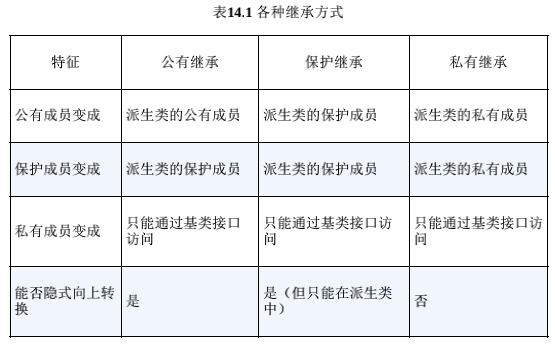
多继承
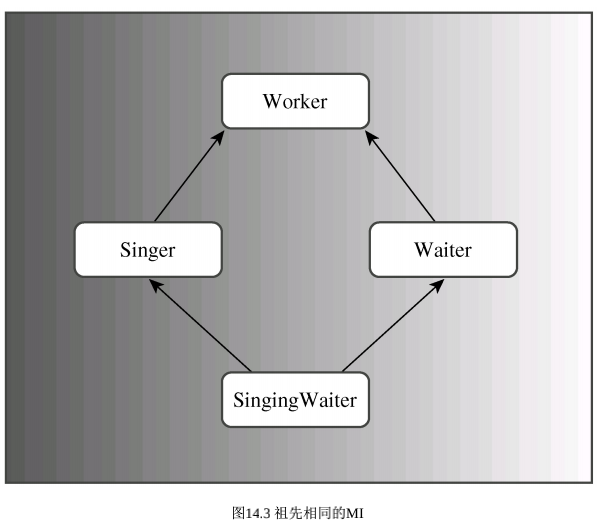
- 菱形继承带来的主要问题是子类继承两份相同的数据，导致资源浪费以及毫无意义
- 利用虚继承可以解决菱形继承问题
虚继承可以让Singer与Waiter继承Worker的一份数据（以虚函数表的方式指向Worker中的内容），SingingWaiter直接继承Worker中的数据。